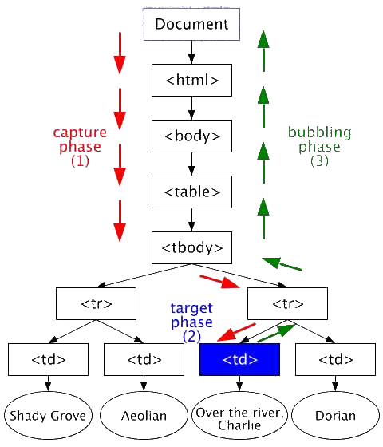

JAVASCRIPT
THIS SECTION DISCUSSES THE LESSONS 1, 2, AND 9. THE TOPICS THAT THIS WILL COVER ARE:
LESSON 1
LOOPS, CONDITIONAL STATEMENTS, FUNCTIONS, VARIABLES, PARAMETERS, ARRAYS, ASSOCIATIVE ARRAYS
This lesson can be best understood by a few short scripts written for a few different outcomes. The first script is written to better look at all elements of the lesson except for Arrays and Associative Arrays, which we will cover hereafter. The script will ask the user to input two numbers, the first number will be raised to the power of the second and it will then display all iterations of that calculation until we reach the answer.
The individual itterations will be shown so that the repetitions can be seen and understood as they happen rather than simply assuming they were or having to follow them in a script debugger. If you look at the JavaScript function calc(), you will notice the condition asking if the inputs (x and y) are greater than 0. If the statement is true, it will begin a while loop, (which could just as easily be substituted for a For loop) The loop uses a temporary variable of i to increment each time until it is the same as x and then it quits.
To sum up, this first example includes a loop, conditional statements, functions, variables and parameters.
See the Pen qBEGKVB by Costigan-Stephen (@costigan-stephen) on CodePen.
Alternatively, for our loop, we could have used:
for(var i=0;i <= y; i++){
cal = Math.pow(x, i);
output += x + " <sup>" + i + " </sup> = " + addCommas(cal) + " <br />";
}
NEXT let's look into Arrays! For this one, let's first create an array and then work with the values inside. We will also stringify the array so that we can visualize the array we have created.
See the Pen OJPYovV by Costigan-Stephen (@costigan-stephen) on CodePen.
Lastly, Associative Arrays! In order to accomplish this one we will be separating the array attributes into separate inputs and then making an assessment based on mileage. I've added some sample data to make this easier, but the idea is that if the mileage is less than 100,000 you pass the assessment, otherwise, it will tell you that you should start saving up for a new car!
We will stringify this array as well so that it will be easier to visualize. Notice the elements are separated with object names as well as values.
See the Pen Associative Array by Costigan-Stephen (@costigan-stephen) on CodePen.
LESSON 2
OBJECT CREATION FUNCTIONS, INHERITANCE, PROPERTIES, METHODS, INSTANTIATION
After looking at the above lesson examples with associative arrays we might now understand better how we can create an object with pre-set values. For lack of a better example, we will use the car array above as our template object. We will be able to take this first object and make variations of it as we need to, which we will go into in a moment. For now, simply understand that the object we have made can be duplicated to make more.
var cars = {
Make:"Ford",
Model:"Falcon",
Year:"2010",
Mileage:"80000"
};
The above JavaScript initialized and created the object cars and gave it 4 properties of Make, Model, Year, and Mileage, which we can fill with input values or duplicate for use with other objects if we so chose. If we decide that we want to duplicate these properties into another object, there are a few different methods to do this.
The SECOND method utilizes the Object.create method and looks like this:
var newCar = Object.create(cars); newCar.Make = "Toyota"; newCar.Model = "Camry"; newCar.Year = "2012"; newCar.Mileage = "60000";
You may notice that the new array "newCar" now has the same properties of Make, Model, Year, and Mileage as Cars did, but with entirely different values. This can be an effective method of creating a series of values based on the same properties. An example of where this might be useful is on occasions where you might want to compare two different cars online in a car buying scenario or otherwise. In these occasions there would likely be more properties to the vehicle such as asking price and condition.
Next, the THIRD method utilizes functions to create objects:
function objCar(Make,Model,Year,Mileage) {
this.Make = Make;
this.Model = Model;
this.Year = Year;
this.Mileage = Mileage;
}
What just happened here is that the object objCar accepted 4 entries of Make, Model, Year, Mileage as property values for it's own fields. There are a number of reasons why you might want to copy existing values, but the main point is that these properties are either initialized or populated by the values entered into the function. Bottom line, objects are very useful! being able to associate a property with an object can be a lot better than trying to remember where we stored the value in an array.
So, let's play with some code! Let's examine all three of the above in the example below:
See the Pen Creating Objects by Costigan-Stephen (@costigan-stephen) on CodePen.
LESSON 9
STANDARD JAVASCRIPT EVENTS INCLUDING THOSE FOR MOBILE DEVICES AND ANIMATION AND TRANSITION EVENTS
There are a lot of events we can look at, but in this section we will be focusing a lot JavaScript events that work on Mobile devices. Mozilla Developer tells us that "Touch events consist of three interfaces (Touch, TouchEvent and TouchList)" -Source. To start, let's look at all the possible event types that are built for touch devices only.
touchstart //fired when a touch point is placed on the touch surface. touchmove //fired when a touch point is moved along the touch surface. touchend //fired when a touch point is removed from the touch surface. touchcancel //fired when a touch point has been disrupted in an implementation-specific manner (for example, too many touch points are created).
Mozilla developer goes a little further than that to explain the touchEvents that are available to a touch device. They are as follows:
touches //a list of all of the touch points currently on the screen. targetTouches //a list of the touch points on the target DOM element. changedTouches //a list of the touch points whose items depends on the associated event type: >> touchstart - A list of the touch points that became active with the current event. >> touchmove - A list of the touch points that have changed since the last event. >> touchend - A list of the touch points that have been removed from the surface (the set of touch points corresponding to fingers no longer touching the surface).
Based on these events a programmer is able to utilize touch gestures to allow a user to interact with a layout and make things happen. For our purposes, we will first look into some basic examples that can be utilized on a mobile device.
So, how does that help us? Well, we can attach things called Listeners to elements so that they can be interacted with by the user. These Listeners are useful for recording the events listed above and must be used in this format:
element.addEventListener(event, function, useCapture)
Where Event can be one of those listed above if using a touch device, or can involve the Mouse or Keyboard if using a computer. Function refers to when the Event happens and can include such cases as a drag function or a finger tap etc. Or even, for arguments sake, a finger release. The last parameter, useCapture, is optional and appears as a boolean true or false value, which relates to when the action occurs. Whether the action occurs in what is known as the 'capture phase' or the 'bubbling phase'. But what is a bubbling phase?
W3 Schools has a great guide to this as it relates to the DOM in which they state:
The DOM event flow is the process through which the event originates from the DOM Events implementation and is dispatched into a tree. Each event has an event target, a targeted node in the case of the DOM Event flow, toward which the event is dispatched by the DOM Events implementation.
A good way to imagine this is using the following image:
As this image, courtesy of
W3 Schools, shows us, the actions are broken down in 3 phases. Namely:
2. The target phase: the event is dispatched to the target node.
3. The bubbling phase: the event is dispatched to the target's ancestors from the direct parent of the target node to the root of the tree.
So lets get into some coding! What if we had some text that changed color when the mouse went over it? Hover effects are pretty fun to do.
See the Pen eYNvXjK by Costigan-Stephen (@costigan-stephen) on CodePen.
Did you guess right? The random color made that harder to get right, but it also made for a cool effect. Overall, the whole thing is pretty neat huh? The commands used here, as you can see from the example code, utilize the onmouseover and onmouseout to determine when the mouse is and isn't on the text. This can also be done with objects and CSS. And that's it!